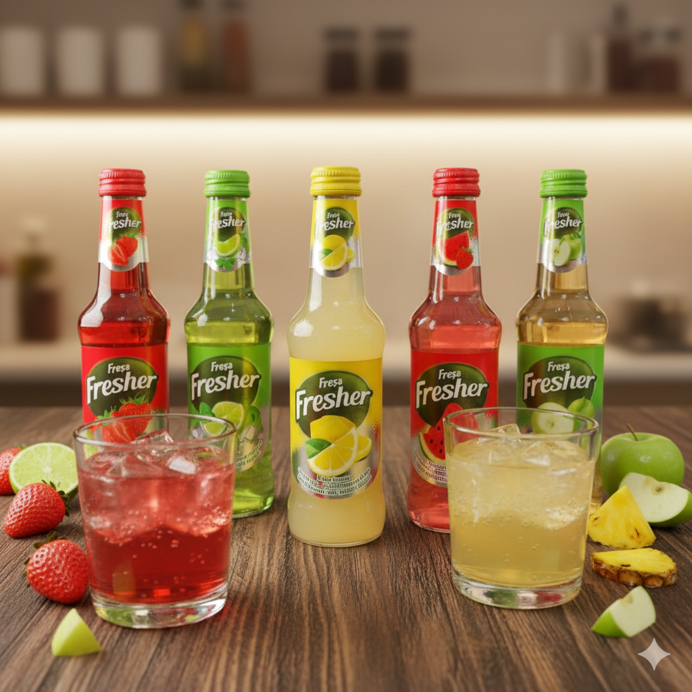

Ficha Técnica
- Marca: Fresa Fresher
- Presentación: Botella de vidrio 250 ml
- Origen: Turquía
- Sabores: Frutales variados
- Certificaciones: HACCP
- Disponibilidad: Inmediata
Información Comercial
- Precio por unidad: $0.63 USD
- Cantidad por FCL: 60,480 unidades
- Valor total por FCL: $38,044.57 USD
- Cajas por FCL: 2,520
- Piezas por caja: 24